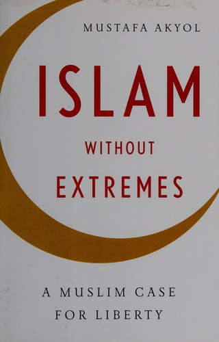

21 bans
Wei Wei
TODO — profile to be supplied.
A data story · Printing Presses and Publications Act, Malaysia
Malaysia has gazetted 3,212 publications as prohibited since 1950, and every decade since has added to the list. What led it kept changing: political subversion through the 1950s, obscene or immoral publications from the 1960s to the 1990s, religious doctrinal material across the 2000s and 2010s. This is what the record shows — and what it cannot yet say.
Source: the Ministry of Home Affairs’ Senarai Perintah Larangan, compiled, cleaned and classified by INITIATE.MY — 3,212 records, 1950–2026. How this database was built.
Part 1 · What the record shows
Across 3,212 publications and 76 years, the through-line is a moving target: ideological security in the Emergency era, then — from the 1980s onward — moral and religious content, until the two largest classified themes, moral regulation and ideological security, account for six in ten of everything ever gazetted. The Ministry’s own stated grounds are narrower still: morality and public order cover 97.4% of recorded justifications, and formal security grounds appear in just five cases.
The record has blind spots, and the analysis names them: a third of origins are unconfirmed, official justifications exist for only about half the dataset, and the current decade is unfinished. These classifications reflect INITIATE.MY’s research taxonomies, not proof of policy intent — the full method is set out under Research Methods and its limits under Research Limitations. Everything that follows is the working behind that sentence.
Part 2 · Time
The dataset records 3,212 publication bans. The largest concentration appeared in the early 1950s — 786 bans, or 24.5% of the dataset — followed by another sustained enforcement cycle in the early-to-mid-1990s, with 715, or 22.3%. Between and after these peaks the pattern stayed uneven: 247 bans in the 1960s, 408 in the 1970s, 358 in the 1980s, 399 in the 2000s, and 229 in the 2010s.
Locked square-on so the pile reads as the chart — switch to Perspective to move the camera. Drag the bottom-right corner to resize the box.
Lower numbers after 2000 do not necessarily mean that overall content regulation declined: this dataset covers formal publication bans, not the wider regulation of online content. And the current decade — 70 bans so far — is still being written.
Part 3 · Language, type & origin
Chinese is the largest recorded language category, with 1,158 entries, followed by English with 947 and Malay with 765 — together, 2,870 records. Another 262 records have no known language.
These figures show the linguistic distribution of prohibited publications, but they do not explain why the materials were banned. Language should not be treated as evidence of a particular ethnicity, ideology or type of content.
Part 3 · Language, type & origin
Chinese dominates the opening of the record — 427 of the 1950s bans, against 84 in English and nine in Malay. English leads the 1970s with 224. Malay overtakes both in the 1980s with 139, and leads the 2000s with 155 and the 2010s with 114, by which point Chinese has fallen to 13.
The 1990s are the one decade with no clear leader: Malay 250, Chinese 249 and English 206, inside the second-largest wave of bans in the record. The 1950s also carry 202 records with no language recorded at all — more than a quarter of that decade, and most of the 262 unknowns in the whole dataset.
A shift in language is not by itself a shift in target. Further verification, by decade, content category and official justification, is needed before conclusions are drawn about how these patterns changed over time.
Part 3 · Language, type & origin
Printed documents account for 3,147 of 3,212 records — 98%. Audio and recordings account for 57. Physical goods, visual media and digital or electronic materials account for eight between them.
That near-silence is not evidence that other media went unpoliced. The PPPA is a print statute: film, broadcast and online content are governed by other laws and other agencies, and never entered this record in the first place.
98% print — so every chart that follows is a chart about print
It is worth fixing that in mind before the rest of the story. Everything here describes one instrument of control among several. A decade that looks quiet in this data may simply be a decade when the censoring moved somewhere the PPPA could not follow.
Part 3 · Language, type & origin
Foreign-origin here means produced or published outside Malaysia — authored, printed or distributed by publishers, organisations or individuals based overseas. Local means produced, published, printed or primarily distributed within Malaysia. Neither is a claim about a country: the gazette records the category, never the place. Full wording under Taxonomy Definitions.
Foreign-origin publications form the largest category, with 1,476 records, or 46%. Local publications account for 669, or 20.8%. And for 1,067 records — 33.2% — the origin remains unclear: the publisher, author, printing location or distribution source was too thin to decide either way.
1 in 3 records has no confirmed country of origin
Because a third of the records lack a confirmed origin, comparisons between foreign and local enforcement should remain cautious.
Part 4 · The people
No single named author or translator dominates the dataset. Wei Wei appears most frequently with 21 bans, followed by Ustaz Ashaari Muhammad with 18 and Marcus Van Heller with 16 — the ten displayed names account for just 115 bans, a relatively dispersed pattern. Publisher data concentrates harder: Sam Luen Bookshop records 95 bans, nearly triple any other name.
21 bans
TODO — profile to be supplied.
18 bans
TODO — profile to be supplied.
16 bans
TODO — profile to be supplied.
A high count is a count of gazette entries, not a measure of influence: multiple editions, repeated imports and inconsistent spellings of the same name all inflate it. Whether the two Ashaari Muhammad entries are one person is a question for the record, not for this chart.
Part 5 · What was banned
The gazette does not say what a publication was about, so the categories on this chart are INITIATE.MY’s, not the Ministry’s. Each record’s title, author, translator and publisher were read by a rule-based multilingual keyword classifier against taxonomies the research team defined, and the results were reviewed by hand. AI models helped generate candidate keywords; the team set the taxonomies and verified the classifications. The full procedure is under Research Methods, and what it cannot support is under Research Limitations.
INITIATE.MY grouped all 3,212 records into five broad content clusters. Obscene or immoral publications form the largest, with 1,252 records (39.0%), followed by subversive ideological and political content with 973 (30.3%) and religious doctrinal deviance with 684 (21.3%). Race, religion and royalty issues form the smallest cluster, with 22 (0.7%); a further 281 (8.7%) are general or unidentified, where titles, metadata or context were too limited for reliable classification.
The composition changed substantially over time. In the 1950s, subversive ideological and political content accounted for 659 of 786 bans — 83.8% of the decade’s total. By the 1990s, obscene or immoral publications had become the largest category, with 411 bans, while religious doctrinal deviance recorded 275 and remained substantial in the 2000s, with 194, and the 2010s, with 153.
Part 5 · What was banned
As trajectories rather than stacks, the handover is the story. Subversive ideological and political content opens at 659 bans in the 1950s and falls away. Obscene or immoral publications climb through the 1970s and 1980s to peak at 411 in the 1990s. Religious doctrinal deviance barely registers before the 1980s, peaks at 275 in the 1990s, and leads the 2010s with 153 of that decade’s 229 bans.
Together those three clusters account for 90.6% of the dataset. They describe the apparent content of the publications under INITIATE.MY’s research taxonomy; they are separate from KDN’s formal legal justifications and do not, by themselves, establish government policy intent.
Part 5 · What was banned
Below the five clusters sit fourteen subclusters — the most specific label the research assigns — and two of them dominate. Erotic or immoral content is the largest, with 1,097 bans (34.2%); communism or socialism follows with 849 (26.4%). Together they account for 1,946 bans, or 60.6% of the dataset, making moral regulation and ideological security the two largest classified themes in the record.
Pornography is classified separately, with 155 bans (4.8%); combined with erotic or immoral content, the broader obscene or immoral cluster holds 1,252 records, although the two categories remain distinct in the research.
The third-largest subcluster — labelled “Other” in the chart — holds 573 bans (17.8%): religious doctrinal publications not classified under the more specific Al-Arqam, Syiah or Ahmadiyyah subclusters. Another 281 records (8.7%) sit under “administrative/unclear ground”, the only subcluster within general or unidentified, where limited information, vague titles or overlapping themes prevented a more precise classification. The remaining subclusters, in descending order, are Al-Arqam (95), revolutionary politics (78), LGBT-related content (41), ethnic incitement (15), Syiah (10), Ahmadiyyah (6), terrorism or militancy (5), insults to religion (4) and royalty (3).
These are the research’s labels for what a publication appears to be about — not a finding about the movements themselves, and not KDN’s legal ground for banning them. Every definition, in full, is under Taxonomy Definitions.
Part 5 · What was banned
Official KDN justifications are available for 1,586 of the 3,212 publications, of which only five pre-date 1984. Two reasons dominate: morality accounts for 893 bans and public order for 652 — together, 97.4% of all recorded justifications.
Every other ground appears only rarely: causing public alarm 23, public interest nine, security five, national interest three, contrary to law one. Formal security grounds were recorded in only five cases — even though the research classifies many publications as ideological or politically subversive.
Part 5 · What was banned
Normalise each decade to 100% and the shift is unmistakable. The 1950s were dominated by subversive ideological and political content — 659 of 786 bans. By the 1980s the focus had moved to moral and religious content: 232 obscene or immoral bans against 33 subversive and 47 religious doctrinal cases. In the 1990s, obscene or immoral publications (411) and religious doctrinal deviance (275) together accounted for 95.9% of the decade’s 715 bans.
In the 2000s the two classifications ran almost equal, at 192 and 194; religious doctrinal deviance then led the 2010s with 153 of 229 bans. The 2020s so far record 39 subversive, 27 obscene or immoral, three religious doctrinal and one 3R-related ban — an incomplete decade. These patterns reflect INITIATE.MY’s research taxonomies and do not, by themselves, prove government policy intent.
Part 5 · What was banned
Aggregates hide the object itself. The six cards further down are drawn straight from the dataset — fields exactly as the gazette record left them, a dash where it left nothing — and show what the classification works with: a title, sometimes an author, sometimes a publisher, and often little more. Five of the six have no traceable cover, which is the ordinary case.
First, a shelf — twelve of the 158 records whose cover could be traced at all. These are not the six; the other 3,054 records have no surviving image, and the gazette line is all that is left of the object.
The six records, as the gazette left them:
Religious doctrinal deviance · Syiah
The title is nearly all the gazette offers — no author, no publisher, no stated ground. For a record this sparse, classification rests on the words of the title itself: here, Imam Khomeini.
Subversive / political · Communism/socialism
Revoked July 2026 Banned and unbanned inside a single year: one of 27 titles gazetted in 2026 so far — and one of the five revocations that July.
Religious doctrinal deviance · Al-Arqam
One of 75 Al-Arqam titles gazetted in 1994 alone — the year the movement’s publications were swept from circulation. Of the 95 bans carrying the label, four in five date from that single year.
Subversive / political · Revolutionary politics
A book of political cartoons. Both Zunar titles in the record — this and 1 Funny Malaysia — were gazetted in 2010, on public-order grounds.
Subversive / political · Revolutionary politics
One of only 23 bans in the entire record justified as causing public alarm — a ground so rare it barely registers on the charts above.
Race, religion & royalty · Ethnic incitement
A graphic memoir, classified under 3R content — yet the Ministry’s stated ground was morality. The legal ground and the content cluster are not the same thing, and that mismatch is the next chapter.
These six are illustrative, chosen to span the clusters — not a sample. Every card sits in the Data tab alongside the other 3,206 records, with the same fields and the same gaps.
Part 5 · What was banned
KDN’s justifications show the formal legal ground used to prohibit a publication; INITIATE.MY’s clusters describe what the publication was about. They are related but should not be treated the same.
Most publications prohibited on morality grounds were classified as obscene or immoral — 820 of 893 cases, including 701 erotic or immoral publications, 119 pornography cases and 37 LGBT-related publications. Public order was used mainly for religious doctrinal content: 564 of 652 public-order bans, including 90 Al-Arqam, seven Syiah and six Ahmadiyyah cases.
Ideological publications look different. In the post-1984 records, communism or socialism appears in only one case formally justified on security grounds, against 12 under public order.
Those two cases, side by side, are the whole point of the distinction. Perjalanan Yang Cemerlang 1930–1980, gazetted in 2017 and attributed to the Communist Party of Malaya, is the single title in the record carrying Keselamatan — security. Arguments For Revolutionery Socialism by John Molyneux, gazetted in 1989 and spelled here as the gazette spelled it, is classified in the same content subcluster but was prohibited under Ketenteraman Awam — public order. Same theme, different legal ground.
One caveat governs this whole grid: KDN’s stated justification is only available from 1984 onward. Just five of the 1,586 records carrying a ground pre-date the Act, so the 1950s and 1960s — when most communist, socialist and revolutionary publications were banned — contribute almost nothing to it. The rarity of security grounds here is a fact about the post-1984 paperwork, not about the whole history of the Act.
Part 6 · The law
The Printing Presses and Publications Act 1984 (PPPA) [Act 301] regulates printing presses, publications and the circulation of printed materials in Malaysia. The law is intended to protect national security, public order and morality. At the same time, Article 10(1)(a) of the Federal Constitution guarantees freedom of speech and expression — although Parliament may restrict that right on grounds including security, public order and morality.
Act 301 · 1984
Regulates presses, publications and circulation to protect national security, public order and morality.
Federal Constitution · Article 10(1)(a)
Guaranteed to every citizen — though Parliament may restrict it on grounds including security, public order and morality.
This creates an important question: how should Malaysia protect public safety without unnecessarily limiting freedom of expression?
Part 6 · The law
The PPPA was enacted during the first Mahathir administration and came into force on 1 September 1984. It developed from earlier systems of publication control: it replaced and absorbed the Printing Presses Act 1948, introduced during the Malayan Emergency, and the Control of Imported Publications Act 1958.
The Emergency, from 1948 to 1960, was a counterinsurgency conflict involving the Malayan Communist Party. During this period, the state expanded controls over political mobilisation, publications and materials considered subversive.
Part 6 · The law
Under Section 7, the government may prohibit publications and control their production, importation and circulation. Enforcement can involve licensing requirements, permits, inspections, seizures and publication bans.
The official Publication Guidelines classify “undesirable publications” under seven grounds. These categories give the government significant responsibility — and considerable discretion — in deciding what materials may be circulated.
Part 6 · The law
For INITIATE.MY, the first concern is how the law balances security with fundamental rights. Materials that directly incite violence or pose a demonstrable threat to public safety may require intervention. However, restrictions should be lawful, necessary and proportionate.
Overly broad control can suppress political criticism, historical inquiry, religious discussion and controversial ideas. It may also weaken academic freedom, critical thinking and knowledge production while encouraging self-censorship.
Part 7 · Now, and next
When prohibition records are difficult to access, incomplete or inconsistently recorded, it becomes harder for the public to understand how the law has been used. Democratising the data means making it accessible, comprehensive and accurate — so that researchers, civil society organisations, students, think tanks, journalists, policymakers and Members of Parliament can take part in informed debate.
INITIATE.MY developed this database to bring together, clean and categorise prohibition data published by the Ministry of Home Affairs. It is designed as an open-source resource to:
The aim is not only to document what has been banned, but to support a more open discussion about national security, public order, the rule of law and freedom of expression in Malaysia.
Part 7 · Now, and next
In July 2026, the Ministry of Home Affairs gazetted five revocation orders. The affected publications may now be legally printed, published, distributed, sold and possessed.
These five are the only revocations this database records — and that is a statement about the database, not about the Act. The source list gazettes prohibition orders; it carries no revocation field, so a ban lifted quietly in, say, 1978 would still appear here as a ban in force. These five were added by hand from the July 2026 notice. Whether other bans have been revoked over the past 76 years is a question this dataset cannot answer, and neither can this site.

The database still includes these five publications because their bans remained in force during the research period. Their inclusion reflects the historical prohibition record rather than their current legal status — so they are marked as revoked after the study period in the Data tab, not removed. The same caution applies in reverse: a record with no revocation badge has not been shown to be still in force, only that no revocation is known to this dataset.
Part 7 · Now, and next
Malaysia has a legitimate duty to protect national security, public order and social harmony. But publication restrictions should address clearly demonstrated harm and remain lawful, necessary, proportionate and open to review. INITIATE.MY’s four recommendations:
Commit to repealing the PPPA. Until repeal, every prohibition should state its legal basis, supporting evidence, duration and appeal process. Controversy, offence or disagreement with dominant political, moral or religious views should not be enough to justify a ban.
The 1950s recorded 786 bans and the 1990s 715 — prohibitions that arose under different political and security conditions and should not remain in force indefinitely. Each ban should expire unless KDN can show it remains necessary and proportionate.
Depending on the harm, age classifications, content advisories, restricted access, limited redactions or action against direct incitement may be more appropriate. Political criticism, historical inquiry, religious disagreement and minority beliefs should not automatically be treated as security threats.
KDN should maintain a standardised, searchable, regularly updated database recording each publication’s title, author, publisher, language, origin, legal ground, gazette reference, review status and revocation status — with missing information, duplicates and misplaced entries clearly identified and corrected.
The dataset
All 3,212 records behind the story — search by title, publisher, printer or author, filter by cluster, origin or revocation status, and click a column header to sort. Download takes whatever the table is currently showing as a CSV, so filter first to export a slice or leave it clear to take the whole database. Spotted a mistake? Tick one or more rows — the checkbox column is pinned to the right — to suggest a correction. A dash means the gazette record left that field blank; KDN justifications exist for about half the records. The five bans revoked in July 2026 stay in the table, marked with a badge.
Suggest an edit
The classification work is ongoing and the gazette records are uneven. If a field is wrong, a publication is missing, or a ban has since been lifted, describe the change below. Tick any number of rows in the table above and they all travel into one issue — useful when the same mistake runs through a batch of records. Ticks survive searching, sorting and paging, so you can gather records from anywhere in the dataset. Nothing is sent from this page: your answers are packed into a pre-filled issue on the project’s GitHub repository, which opens in a new tab for you to review and submit.
Codebook · Research methods
This research combined official government data, human verification and AI-assisted analysis to build, clean and classify the PPPA prohibition database.
The research began by extracting the Senarai Perintah Larangan from the Ministry of Home Affairs (KDN) website. KDN’s Enforcement and Control Division also provided a separate list containing the available official justification for each prohibition.
TODO — source link needed. The KDN URL this list was extracted from no longer resolves, and this page will not link to a dead address. A working link or an archived capture goes here.
The original metadata included:
The official justifications were grouped under seven grounds:
A script generated with Claude was used to extract the website records directly into a comma-separated values file. Using a script reduces the risk of information being altered or generated during extraction. Subsequent updates were identified by monitoring KDN’s website and relevant news reports and were added manually.
The research team reviewed the extracted records to identify inaccurate, incomplete or misplaced information. Where possible, titles, authors, translators, publishers, printers, languages and other metadata were verified using publicly available sources.
Some information remained unavailable, particularly for older publications. These gaps were retained as unknown or unclear rather than filled without sufficient evidence.
The team then developed additional taxonomies — also referred to as classifications throughout the research — to supplement the original KDN data.
The taxonomies covered three areas.
Records were classified as:
Publications were classified as:
The main themes of prohibited publications were organised into five broad clusters:
These were divided into more specific subclusters, including communism or socialism, revolutionary politics, terrorism or militancy, LGBT-related content, Al-Arqam, Syiah, Ahmadiyyah, pornography, and erotic or immoral content.
The content taxonomies were applied through two stages.
The metadata for each publication — including its title, author, translator and publisher — was combined into a single text string. This was converted into a numerical representation, or embedding, using multilingual sentence-transformer models.
Three models were evaluated:
paraphrase-multilingual-mpnet-base-v2;intfloat/multilingual-e5-large; andBAAI/bge-m3.The research used a semi-supervised anchor-based nearest-centroid method:
However, the confidence threshold did not reliably identify uncertain records because very few publications received low-confidence scores.
The research therefore adopted a more transparent rule-based keyword classifier. The system reviewed the following fields in order:
Earlier matches took priority. For example, recognised publishers, authors or title terms could assign a publication to Al-Arqam, Syiah, communism or socialism, pornography, or another relevant subcluster.
ChatGPT, Claude and DeepSeek were used to help generate multilingual keywords and phrases. However, the research team determined the taxonomies, reviewed the keyword rules and verified the resulting classifications.
Publications that did not match any rule were placed under General/Unidentified for further review.
The analysis kept two coding systems distinct:
This allowed the research to compare content patterns with official grounds — for example, obscene or immoral publications with morality-based prohibitions, and religious doctrinal publications with public-order justifications — without treating the two coding systems as interchangeable.
Codebook · Research limitations
The gaps, ambiguities and interpretive limits that shape how far the findings can be pushed — in the source records, in the taxonomies, and in the historical reading.
The dataset was imported from KDN’s official prohibition list. However, several limitations affect the reliability of the classifications and the interpretation of the findings.
Many records do not include the full text of the publication. Classification therefore relied mainly on titles, bibliographic details and publicly available online information.
Some titles provide insufficient context for reliable classification. For example, Percutian Yang Romantik (Romantic Holidays), published in 1990, lists no author and provides only the publishing house, making it difficult to determine which cluster it belongs to. Another example is Suratan2 Dalam Bahasa China Yang Mengandongi Perkataan2 Dan Muzik Dalam Lagu2 Yang Tajok2Nya Ia-Lah: (Terdapat Sebanyak 13 Tajuk), where the record does not even specify the individual titles that were prohibited. Similarly, I Am Jazz does not, from its title alone, clearly indicate that it contains LGBTQ+ themes. Information on older or obsolete publications was also often difficult to locate or verify.
The official records contain several metadata issues:
These issues limit the reliability of analysis by language, origin, author, printer and publisher.
Official KDN justifications are available for 1,590 of the 3,213 publications. These records are overwhelmingly from the post-1984 period, although nine publications pre-date 1984.
Findings on morality, public order, security and other official grounds therefore mainly reflect the post-1984 period and should not be applied to the full historical dataset.
This may understate the historical relationship between security enforcement and earlier communist, socialist and revolutionary publications.
Revoked bans are not consistently identified in KDN’s official prohibition list. There is also no comprehensive public list showing which prohibitions have been lifted.
Recent media reports identified revoked publications that were not yet reflected in the official list during the research period. The cumulative number of prohibition orders should therefore not be interpreted automatically as the number of bans that remain active.
Findings on publication content, language, origin, publishers, printers and official legal justifications should be interpreted cautiously. The available data supports analysis of broad patterns, but not definitive conclusions in every individual case.
The research used online searches, Chinese-language translation tools and contextual information to address data gaps. Missing or unverifiable information remained coded as unknown. Automated classification was combined with human review, and each analysis states its relevant period, coverage and number of records. Entity names should also be cleaned and standardised before detailed publisher, printer or network analysis is conducted.
Some publications may reasonably fit more than one cluster or subcluster. For example, Voice of the Revolution by the People’s Liberation Army of Malaya, North Johore 5th Brigade, West Section could be classified under either revolutionary politics or terrorism/militancy. October Revolution and China could similarly fall under revolutionary politics or communism/socialism. Lesbian Sex Positions could be classified as both LGBT-related and obscene or immoral content. Distinguishing erotic or immoral material from pornography was also difficult where the full publication was unavailable.
Keyword rules may introduce unintended bias. Chinese-language publications, for example, could be associated too readily with communism because of patterns in older records. Language or origin alone does not establish ideological content.
INITIATE.MY’s taxonomies and KDN’s justifications also serve different purposes. The taxonomies describe what a publication appears to contain, while KDN’s justifications record the formal legal ground used for prohibition. Repeated appearances of particular authors, printers or publishers likewise do not necessarily prove targeted enforcement.
Implication: The classifications should be treated as analytical categories rather than definitive descriptions of every publication. Relationships between content, official legal grounds and recurring entities should not be interpreted as evidence of government intent or targeted enforcement without further evidence.
Mitigation: Each publication was assigned a primary category based on its most identifiable theme, while overlaps were recognised. Keywords were assessed alongside the title, period, author, publisher and available contextual information.
The database covers PPPA prohibition records and is mainly focused on printed publications. It does not represent the wider regulation of digital, audiovisual or online content under other laws and enforcement systems.
The dataset shows when bans were recorded but does not prove why enforcement rose in particular years. Peaks may reflect political or security developments, but they may also result from delayed gazettement or administrative batching.
The 2020s are incomplete and should not be compared directly with full decades. Aggregate language and origin data also cannot show historical changes without decade-level analysis. The cumulative total represents all recorded prohibition orders, not necessarily the number that remains legally active.
Implication: The findings can identify broad enforcement patterns but cannot establish the cause of each peak, demonstrate changes in the wider regulation of information, or determine the current number of active bans.
Mitigation: Historical interpretations were checked against gazette dates, legal grounds, content taxonomies and relevant events where possible. Researchers applied contextual judgement when interpreting ambiguous records and historical patterns, while expert reviewers were consulted to assess the reasonableness and consistency of key interpretations. Further decade-level analysis and more complete review and revocation data are required for stronger conclusions.
Codebook · Taxonomy definitions
The three classification systems applied to every record: what kind of publication it is, where it came from, and the cluster and subcluster themes describing what it contains.
Under the Printing Presses and Publications Act 1984 (PPPA) of Malaysia, the Home Affairs Minister has broad, “absolute discretion” to ban items defined as “publications” if they are deemed prejudicial to public order, morality, security, or national interest. Because the legal definition of a “publication” is extremely wide — covering anything capable of suggesting words or ideas — the ban extends beyond books and newspapers to various physical goods.
| Num. | Cluster theme | Definition | Sub-cluster | Definition |
|---|---|---|---|---|
| 1 | Subversive ideological and political content | Publications that promote, justify, or discuss ideologies, movements, or narratives considered to challenge the authority of the state, constitutional order, or national security. These publications typically advocate revolutionary political change, extremist ideologies, or alternative political systems perceived as destabilising Malaysia’s governance structure. | Communism/socialism | Publications that promote, defend, or disseminate ideological materials related to communism, Marxism, Leninism, Maoism, or socialist revolutionary movements. This includes materials advocating class struggle, overthrow of capitalist systems, or historical narratives supportive of communist movements such as the Communist Party of Malaya. |
| Revolutionary politics | Publications advocating political upheaval, regime change, or revolutionary transformation of the state through radical or confrontational political movements. This includes materials encouraging mass mobilisation, civil resistance aimed at overthrowing institutions, or ideological justification for dismantling the current political system. | |||
| Terrorism / militancy | Publications that promote, glorify, justify, or provide information supporting violent extremist groups, terrorist organisations, or militant activities. This includes propaganda, recruitment material, operational guidance, or narratives legitimising violence against civilians or state institutions. | |||
| LGBT | Publications that explicitly promote, advocate, or discuss lesbian, gay, bisexual, and transgender identities, lifestyles, or rights, particularly where framed as challenging prevailing social norms or moral standards. Materials may include advocacy, personal narratives, educational texts, or activist literature relating to sexual orientation and gender identity. | |||
| 2 | Race, religion & royalty (3R issues) | Publications containing narratives, statements, or depictions that may incite hostility, tension, or conflict related to race, religion, or royalty (3R) in Malaysia. These materials may challenge social harmony or involve sensitive issues affecting inter-ethnic relations, religious respect, or the constitutional monarchy. | Ethnic incitement | Publications that contain derogatory, inflammatory, or hostile narratives targeting specific ethnic groups, or that encourage discrimination, hatred, or violence between communities. |
| Insults to religion | Publications that contain content perceived as insulting, mocking, or degrading religious beliefs, figures, scriptures, or institutions. These materials may provoke religious sensitivities or challenge established religious doctrines in a way considered offensive. | |||
| Insults to royalty | Publications containing content perceived as insulting, mocking, or degrading the Malaysian monarchy or members of royal institutions. This includes narratives that question the legitimacy, authority, dignity, or role of the royal institution in a manner considered offensive or disrespectful. | |||
| 3 | Religious doctrinal deviance | Publications associated with religious teachings or interpretations considered deviant, unorthodox, or contrary to mainstream Sunni Islamic doctrine as recognised by Malaysian religious authorities. | Al-Arqam | Publications promoting, defending, or documenting the teachings, ideology, leadership, or activities of the Al-Arqam movement, including materials associated with its founder or organisational structure. |
| Syiah | Publications advocating or explaining Shi’a Islamic theology, jurisprudence, or religious practices, particularly where presented as an alternative to Sunni doctrine dominant in Malaysia. | |||
| Ahmadiyyah | Publications promoting or explaining the beliefs and teachings of the Ahmadiyyah movement, including materials related to its founder, theological interpretations, or organisational structure. | |||
| Others | Publications associated with other religious movements or teachings classified as deviant by Malaysian religious authorities but not belonging to the Al-Arqam, Shi’a, or Ahmadiyyah traditions, and Christian proselytisation. | |||
| 4 | Obscene / immoral publications | Publications containing sexually explicit, obscene, or morally offensive material, including depictions or narratives that violate public decency standards. | Erotic / immoral content | Publications featuring sexual themes, suggestive imagery, drug glorification, or narratives intended to stimulate sexual interest, but not necessarily containing explicit graphic sexual acts. |
| Pornography | Publications containing explicit depictions of sexual acts, nudity, or graphic sexual imagery intended primarily for sexual arousal. | |||
| 5 | General / unidentified | Publications where the reason for prohibition is based on multiple overlapping grounds, making precise classification difficult or unclear and other administrative reasons. | Administrative / unclear rationale | Publications where the official prohibition notice does not clearly specify the reason, or where available information is insufficient to classify the content into other clusters. |
Codebook · Research team
The compilation, cleaning, classification and analysis behind this record — and the people accountable for each part of it.
Reviewers are still being confirmed, and will be named here once they are. Their role — assessing the reasonableness and consistency of key interpretations — is described under Research Limitations.
Contact
Everything behind this site — the 3,212 records, the scripts that build them, the codebook and the site itself — is published in the open repository below. The classification is a work in progress, so corrections, additions and challenges to it are the most useful thing you can send.
Licence
TODO — confirm licence. “Open” on its own does not tell anyone what they may do with this. Two answers are needed before this section can say anything: a named licence for INITIATE.MY’s own work on the dataset and the site (CC BY 4.0?), and the copyright status of the underlying KDN gazette records, which INITIATE.MY compiled but did not create.
Until both are settled, please treat the material as all-rights-reserved and ask before republishing. Citation and linking are welcome regardless.
Repository
github.com/dekolab/db4-websiteThe repository holds the finalised dataset and the script that generates it, the codebook documents, and the full source of this site. Issues and pull requests are open to anyone.
The fastest route is the suggest an edit form under the data table. Tick any number of rows and the form carries their current field values into a pre-filled GitHub issue for you — no account setup beyond a GitHub login, and nothing is sent from this page. You can also name a publication the directory is missing entirely.
Please cite a source. A change traceable to the Warta Kerajaan (Federal Gazette) notice can be verified quickly; one without a source takes far longer.
For the website rather than the data — a chart that misreads, a broken filter, an accessibility problem, or something you wish the explorer could do — open a feature request.
Clone or fork the repository and the whole dataset comes with it. Re-run the analysis, check our figures against the gazette, build something else on top of it, or send a pull request. If you publish anything using it, please cite INITIATE.MY and link back so readers can check the record for themselves — and see the licence note above before republishing the data itself.
Every record behind the story is browsable in the Data tab, with a few tools worth knowing about:
A dash in any cell means the gazette record left that field blank — not that the value is zero or unknown to us specifically. Official KDN justifications exist for 1,586 of the 3,212 records, so that column is empty about half the time. What the data cannot support is set out under Research Limitations.
For anything that does not fit an issue — press and research enquiries, collaboration, or a question about the methodology. If you are writing about a specific record, include its title and year exactly as they appear in the Data tab.